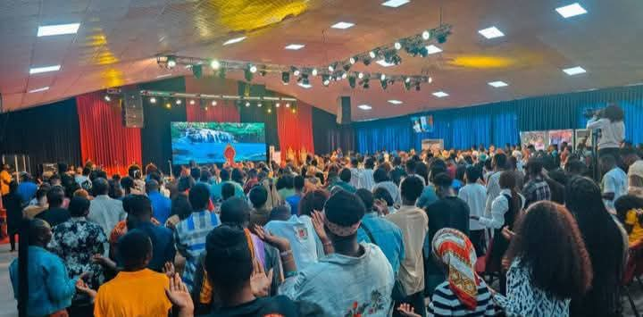
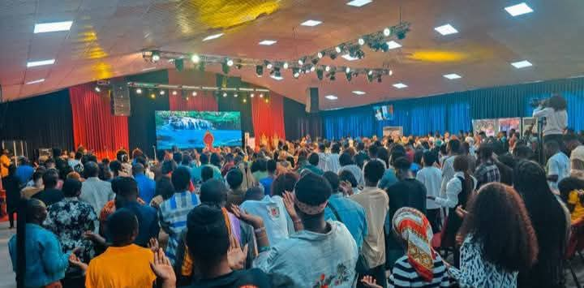

Nice to Meet You


Our Senior Pastor
Meet the visionary leader of Citadel of Mercy International Church. A servant of God dedicated to preaching the undiluted Word of truth and leading souls to Christ.
Pascal Goodnews. O. phD is a ministry gift of God, Empowered by the Holy Spirit and sent to the body of Christ. He had his first degree from the Bible University, Canada; where He also earned his master and PhD.
The first child amongst 7 (seven) children and a secound generation preacher, Son of late Pascal Onyema Orji. Amazingly, He stated preaching and prophesying from a tender age of six (6,) born in Bauchi state, Nigeria
He is a prophet with unprecedented evidence. His meetings are characterized with rare signs and wonders. A much sought after conference and convention speaker, with divine insights.
He is a successful business strategist who travels extensitvly around the world. He is the founder of citadel of Mercy Intl, Presently in Lagos State, Nigeria; where he lives with his wife and children.


Our Choir
The Citadel Choir is a vibrant and spirit-filled music ministry, dedicated to ushering the presence of God through heartfelt worship and praise. They believe that music is not just sound, but a powerful tool to transform lives and draw souls closer to Christ.
Comprising gifted men and women from diverse backgrounds, the choir is united by one passion—to glorify Jesus with every song. Their voices blend in harmony to create an atmosphere where the Holy Spirit moves freely, touching hearts and healing broken lives.
Beyond Sunday services, the choir ministers during special programs, crusades, weddings, and community outreaches. Each ministration is marked by a deep sense of reverence and a contagious joy that stirs the hearts of all who listen.
The choir is also a training ground for young talents, nurturing upcoming musicians and worship leaders who will carry the torch of revival to the next generation. Discipline, excellence, and spiritual growth are the hallmarks of their service.


Community Outreach
At Citadel of Mercy International Church, we believe that true Christianity is not only preached but demonstrated through acts of love. Our community outreach ministry exists to extend God’s mercy beyond the walls of the church and into the lives of people in need.
Through regular food drives, we provide meals and essential supplies to families facing hardship. Our mission is to ensure that no one in our community goes to bed hungry, and that the love of Christ is expressed in practical, life-changing ways.
Medical aid is also a vital part of our outreach. With the help of volunteer doctors, nurses, and healthcare workers, we organize free medical check-ups, health seminars, and distribution of medications. Many lives have been saved and restored through these initiatives.
Education remains a cornerstone of our outreach vision. By providing scholarships, learning materials, and mentorship programs, we invest in the future of young people. Our goal is to raise a generation that is spiritually grounded and academically empowered.


Prayer Ministry
The Prayer Ministry is the spiritual backbone of Citadel of Mercy International Church. We believe that nothing moves without prayer, and everything changes when God’s people call upon His name.
Our intercessory team is committed to standing in the gap for the church, families, communities, and nations. With hearts burdened for revival, they labor in the place of prayer to birth God’s will on earth as it is in heaven.
Prayer gatherings are held regularly, where members unite in faith to seek God’s face, break strongholds, and release divine blessings. From early morning prayers to night vigils, the atmosphere is charged with fervency and power.
Beyond corporate meetings, the Prayer Ministry trains believers to cultivate a personal lifestyle of prayer, teaching them how to pray effectively, study the Word, and walk in the authority of the Spirit.
The team also organizes special intercessory sessions for pressing issues—whether for the nation, the sick, the youth, or global crises. Their unshakable belief is that “the effectual fervent prayer of the righteous availeth much” (James 5:16).


 
